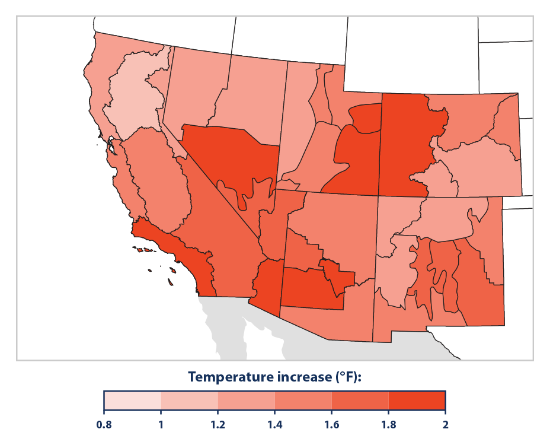
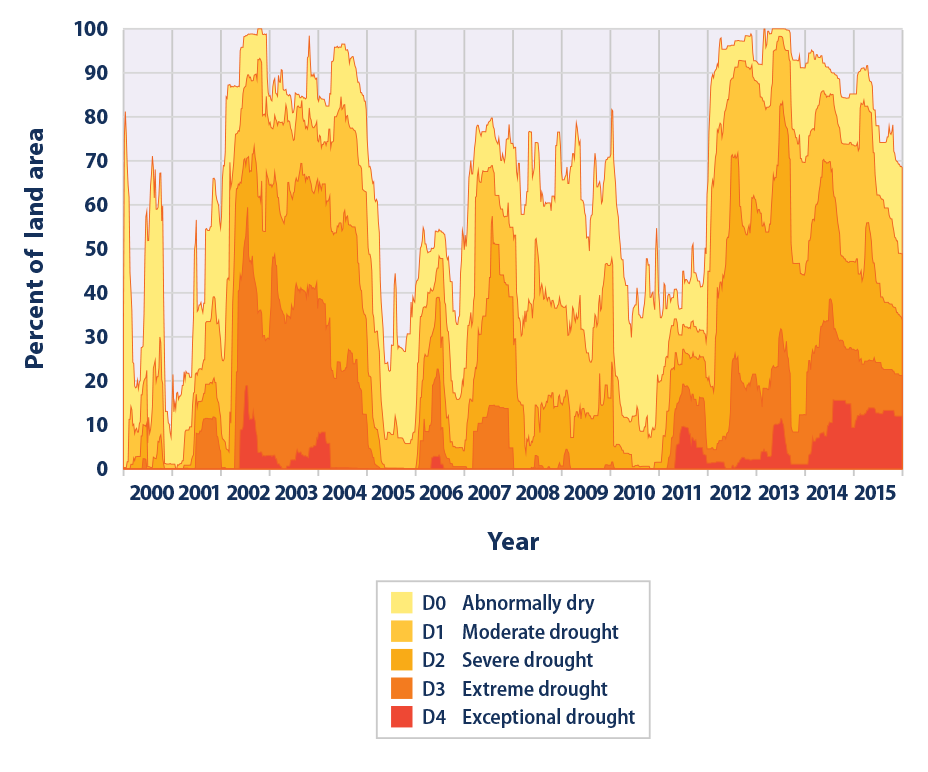
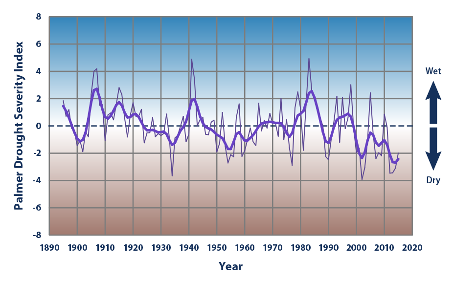

A Closer Look: Temperature and Drought in the Southwest
This feature provides a closer look at trends in temperature and drought in the southwestern United States.
- 

This map shows how the average air temperature from 2000 to 2015 has differed from the long-term average (1895–2015). To provide more detailed information, each state has been divided into climate divisions, which are zones that share similar climate features.
Data source: NOAA, 20162
Web update: August 2016 - 
This chart shows the percentage of land area in six southwestern states (Arizona, California, Colorado, Nevada, New Mexico, and Utah) classified under drought conditions from 2000 through 2015. This figure uses the U.S. Drought Monitor classification system, which is described in the table in the Drought indicator.
Data source: National Drought Mitigation Center, 20163
Web update: August 2016 - 
This chart shows annual values of the Palmer Drought Severity Index, averaged over six states in the Southwest (Arizona, California, Colorado, Nevada, New Mexico, and Utah). Positive values represent wetter-than-average conditions, while negative values represent drier-than-average conditions. A value between -2 and -3 indicates moderate drought, -3 to -4 is severe drought, and -4 or below indicates extreme drought. The thicker line is a nine-year weighted average.
Data source: NOAA, 20164
Web update: August 2016
Key Points
- Every part of the Southwest experienced higher average temperatures between 2000 and 2015 than the long-term average (1895–2015). Some areas were nearly 2°F warmer than average (see Figure 1).
- Large portions of the Southwest have experienced drought conditions since weekly Drought Monitor records began in 2000. For extended periods from 2002 to 2005 and from 2012 through 2015, nearly the entire region was abnormally dry or even drier (see Figure 2).
- Based on the long-term Palmer Index, drought conditions in the Southwest have varied since 1895. The early 1900s and the 1950s experienced considerable drought, the 1980s were relatively wet, and the last decade has seen the most persistent droughts on record (see Figure 3).
Background
The American Southwest might evoke images of a hot, dry landscape—a land of rock, canyons, and deserts baked by the sun. Indeed, much of this region has low annual rainfall and seasonally high temperatures that contribute to its characteristic desert climate. Yet this landscape actually supports a vast array of plants and animals, along with millions of people who call the Southwest home. All of these plants, animals, and people need water to survive.
Water is already scarce in the Southwest, so every drop is a precious resource. People in the Southwest are particularly dependent on surface water supplies like Lake Mead, which are vulnerable to evaporation. Thus, even a small increase in temperature (which drives evaporation) or a decrease in precipitation in this already arid region can seriously threaten natural systems and society. Droughts also contribute to increased pest outbreaks and wildfires, both of which damage local economies, and they reduce the amount of water available for generating electricity—for example, at the Hoover Dam.1
While two indicators in this report present information about unusually high or low temperatures and drought on a national scale (see the High and Low Temperatures indicator and the Drought indicator), this feature highlights the Southwest because of its particular sensitivity to temperature and drought. Parts of the Southwest are also experiencing long-term reductions in mountain snowpack (see the Snowpack indicator), which accounts for a large portion of the region’s water supply. This feature focuses on six states that are commonly thought of as “southwestern” and characterized at least in part by arid landscapes and scarce water supplies: Arizona, California, Colorado, Nevada, New Mexico, and Utah. Temperature and drought data come from a network of thousands of weather stations overseen by the National Weather Service.
The map in Figure 1 shows how average annual temperatures in the Southwest from 2000 to 2015 differed from the average over the entire period since widespread temperature records became available (1895–2015).
Figures 2 and 3 show two ways of measuring drought in the Southwest: the Drought Monitor and the Palmer Drought Severity Index. The Palmer Index is calculated from precipitation and temperature measurements at weather stations, and has been used widely for many years. The Drought Monitor is a more recent and more detailed index based on several other indices (including Palmer), along with additional factors such as snow water content, groundwater levels, reservoir storage, pasture/range conditions, and other impacts. See the Drought indicator for more information about these indices.
Notes
Natural variability, changes in irrigation practices, and other diversions of water for human use can influence certain drought-related measurements. Soil moisture, ground water, and streamflow are part of Drought Monitor calculations (Figure 2), and they are all sensitive to human activities.
Data Sources
Data for Figures 1 and 3 were obtained from the National Oceanic and Atmospheric Administration’s National Centers for Environmental Information, which maintains a large collection of climate data online at: www.ncei.noaa.gov. Data for Figure 2 were provided by the National Drought Mitigation Center, which gives historical data in table form at: http://droughtmonitor.unl.edu/MapsAndData.aspx.
Technical Documentation
References
1. MacDonald, G.M. 2010. Water, climate change, and sustainability in the Southwest. P. Natl. Acad. Sci. USA 107(50):21256–21262.
2. NOAA (National Oceanic and Atmospheric Administration). 2016. National Centers for Environmental Information. Accessed January 2016. www.ncdc.noaa.gov.
3. National Drought Mitigation Center. 2016. Maps and data. Accessed January 2016. http://droughtmonitor.unl.edu/MapsAndData.aspx.
4. NOAA (National Oceanic and Atmospheric Administration). 2016. National Centers for Environmental Information. Accessed January 2016. www.ncdc.noaa.gov.